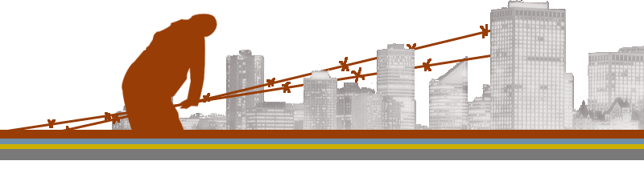

|
Our Friends: thoughtcrime ink |
Latest NewsThe Edmonton Anarchist Bookfair will have the pleasure of hosting Andrej Grubacic as the 2008 opening speaker. Andrej Grubacic is a dissident from the Balkans. A radical historian and sociologist, he is the author of Globalization and Refusal and the forthcoming titles: Hidden History of American Democracy and The Staughton Lynd Reader. A fellow traveler of Zapatista-inspired direct action movements, in particular Peoples' Global Action, and a co-founder of Global Balkans Network and Balkan Z Magazine, he is a visiting professor of sociology at the University of San Francisco. His keynote address (October 3, 7pm) will be on Anarchist History. Each year the Anarchist Bookfair collective assembles books, art, zines, prints, crafts, clothing, music, Vegan baked goods, and more... All to be sold to the highest bidder! Details are on the Events page! Stay InformedSign up with our Yahoo group to get announcements in your mailbox. |
|  |